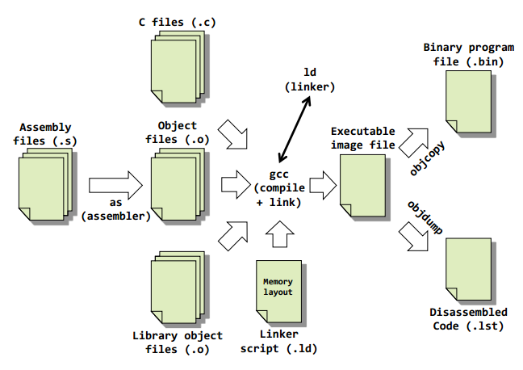
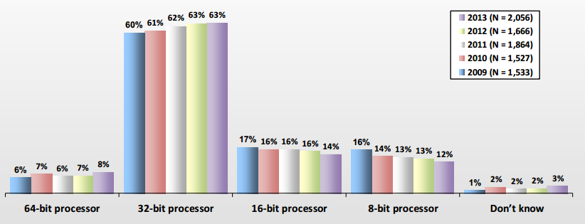
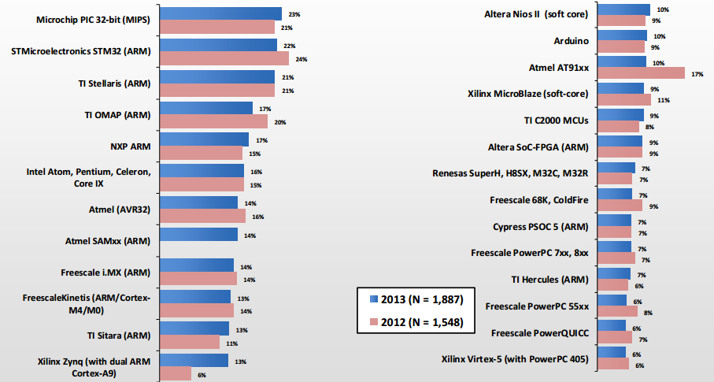

<!DOCTYPE html>

<!-- Mirrored from www.bogotobogo.com/cplusplus/embeddedSystemsProgramming_gnu_toolchain_ARM_cross_compiler.php by HTTrack Website Copier/3.x [XR&CO'2014], Mon, 11 Dec 2017 14:57:45 GMT -->
<head>
  <title>C++ Tutorial: Embedded Systems Programming Hello World for ARM - 2017</title>
  <meta content="C++ Tutorial: Embedded Systems Programming, ARM, Led, Blink. A toolchain is a collection of programming tools. It consists of a compiler, linker, assembler, and a debugger. The GNU toolchain is a programming tools produced by the GNU Project. The GNU toolchain plays a vital role in development of software for embedded systems. It can be ported to Microsoft Windows (via Cygwin and MinGW/MSYS)." name="description" />
  <meta content="C++ Tutorial, Embedded Systems Programming, RTOS(Real Time Operating System), ARM microprocessor, Linux, gcc tool chain" name="keywords" />
  <meta name="viewport" content="width=device-width, initial-scale=1">

  <link href="http://netdna.bootstrapcdn.com/bootstrap/3.0.0/css/bootstrap.no-icons.min.css" rel="stylesheet">
  <link href="http://netdna.bootstrapcdn.com/font-awesome/4.0.3/css/font-awesome.css" rel="stylesheet">
  <link rel="stylesheet" href="http://fonts.googleapis.com/css?family=Alice|Open+Sans:400,300,700">
  <link rel="stylesheet" href="../public/css/app.css">
  <link rel="stylesheet" href="../public/css/styles.css">
  <link rel="stylesheet" href="../public/css/bogostyleWidePreNew.css">
</head>

<body class="home">
    <nav class="navbar navbar-default navbar-fixed-top">
    <div class="container-fluid">      
      <div class="navbar-header">
        <!--<button type="button" class="navbar-toggle collapsed" data-toggle="collapse" data-target="#navbar" aria-expanded="false" aria-controls="navbar"> -->
        <button type="button" class="navbar-toggle collapsed" data-toggle="collapse" data-target=".navbar-collapse" aria-expanded="false" aria-controls="navbar"> 
          <span class="sr-only">Toggle navigation</span> 
          <span class="icon-bar"></span> 
          <span class="icon-bar"></span> 
          <span class="icon-bar"></span> 
        </button>
        <a class="navbar-brand" href="../index-2.html">BogoToBogo</a>
      </div>
      
      <div class="navbar-collapse collapse">
        
        <ul class="nav navbar-nav">
          <li class="active"><a href="../index-2.html">Home</a></li>
          <li><a href="../about_us.html">About</a></li>
          <li><a href="../Hadoop/BigData_hadoop_Install_on_ubuntu_single_node_cluster.html">Big Data</a></li>
          <li><a href="../python/scikit-learn/Artificial-Neural-Network-ANN-1-Introduction.html">Machine Learning</a></li>
          <li><a href="../AngularJS/AngularJS_Introduction.html">AngularJS</a></li> 
          <li><a href="../python/pytut.html">Python</a></li>
          <li><a href="cpptut.html">C++</a></li>
          <li><a href="../DevOps/DevOps_Jenkins_Chef_Puppet_Graphite_Logstash.html">DevOps </a></li>
          <li><a href="../Algorithms/algorithms.html">Algorithms</a></li> 
          <li class="dropdown">
            <a href="#" class="dropdown-toggle" data-toggle="dropdown">More...<b class="caret"></b></a>
            <ul class="dropdown-menu">
           
              <li><a href="../Qt/Qt5_Creating_QtQuick2_QML_Application_Animation_A.html">Qt 5</a></li>                           
              <li><a href="../Android/android.html">Android</a></li>
              
              <li><a href="../Linux/linux_tips1.html">Linux</a></li>
              <li><a href="../Java/tutorials/on_java.html">Java</a></li>
              <li><a href="../CSharp/.netframework.html">CSharp</a></li>
              <li><a href="../VideoStreaming/videostreaming_etc.html">Video Streaming</a></li>
              <li><a href="../FFMpeg/ffmpeg_fade_in_fade_out_transitions_effects_filters_slideshow_concat.html">FFmpeg</a></li>
              <li><a href="../Matlab/Matlab_Tutorial_Manipulating_Audio_I_Reverse_Delay_Tone_Control_Changing_Speed_Removing_Vocals.html">Matlab</a></li>
              <li><a href="../python/Django/Python_Django_Forums_Shared_Host.html">Django 1.8</a></li>
              <li><a href="../Laravel5/Laravel5_ToDo_List_Sample.html">Laravel 5.2</a></li>
              <li><a href="../RubyOnRails/RubyOnRails.html">Ruby On Rails</a></li>
              <li><a href="../HTML5/HTML5_Tutorial.html">HTML5 & CSS</a></li>
              <li><a href="../AmazingPlaces/index.html" target="_blank">
Earth</a> </li>
            </ul>
          </li>
        </ul>      
      </div>
    </div>  
  </nav>  

  <div id="main">
    <div class="container">
      <div class="row section featured topspace">
        <div class="row">
          <div class="col-sm-9 col-md-9 col-xs-9">
            <h2 class="section-title">Embedded Systems Programming Hello World for ARM - 2017        <g:plusone></g:plusone></h2>
            <div class="icon-image">
                 
            </div>
            <div class="SocialLinks">
  <span class='st__large' displayText=''></span>
  <br><br>
  <div align="center">
  <span class='st_facebook_large' displayText='Facebook'></span>
  <span class='st_twitter_large' displayText='Tweet'></span>
  <span class='st_linkedin_large' displayText='LinkedIn'></span>
  </div>
  <br><br>
  <script type="text/javascript" src="http://w.sharethis.com/button/buttons.js"></script>
  <script type="text/javascript">stLight.options({publisher: "b9569c43-5f56-4501-92f0-4bf4aa8fceb0", doNotHash: false, doNotCopy: true, hashAddressBar: false});</script>
</div>

<div id="bookmarkshare">
  <script type="text/javascript">var addthis_config = {"data_track_clickback":true};</script>
  <a class="addthis_button" href="http://www.addthis.com/bookmark.php?v=250&amp;username=khhong7"></a>
  <script type="text/javascript" src="http://s7.addthis.com/js/250/addthis_widget.js#username=khhong7"></script>
</div>

<br>
<hr>
<br>


<!-- Google bogo1 ad -->
<!-- Google search box -->


<!-- bogo1 -->
<div>
  <script async src="http://pagead2.googlesyndication.com/pagead/js/adsbygoogle.js"></script>
  <!-- bogo1 -->
  <ins class="adsbygoogle"
     style="display:inline-block;width:728px;height:90px"
     data-ad-client="ca-pub-4716428189734495"
     data-ad-slot="6542308167"></ins>
  <script>
   (adsbygoogle = window.adsbygoogle || []).push({});
  </script>
</div>


<!-- Google search box -->
<div class="AdSenseSearch">
  bogotobogo.com site search:
  <form action="http://www.google.com/" id="cse-search-box" target="_blank">
    <div>
      <input type="hidden" name="cx" value="partner-pub-4716428189734495:1794050961" />
      <input type="hidden" name="ie" value="UTF-8" />
      <!--<input type="text" name="q" size="55" />-->
      <input type="text" name="q" size="" width="90%"/>
      <input type="submit" name="sa" value="Search" />
    </div>
  </form>
  <script type="text/javascript" src="http://www.google.com/coop/cse/brand?form=cse-search-box&amp;lang=en"></script>
</div>


<hr>
            <br><br><br>
<div class="subtitle" id="toolchain">Toolchain</div>
<div class="subtitle_2nd" id="whatistoolchain">What is Toolchain?</div>
<p>A <strong>toolchain</strong> is a collection of programming tools.</p>

<!-- Google bogo_square_ad -->
<div>
  <script type="text/javascript">
    google_ad_client = "ca-pub-4716428189734495";
    /* bogo_LargeRectangle_336_280 */
    google_ad_slot = "2712696561";
    google_ad_width = 336;
    google_ad_height = 280;
  </script>
  <script type="text/javascript"
    src="http://pagead2.googlesyndication.com/pagead/show_ads.js">
  </script>
</div>
<br>


<p>It consists of a compiler, linker, assembler, and a debugger. The <strong>GNU toolchain</strong> is a programming tools produced by the GNU Project. The GNU toolchain plays a vital role in development of software for embedded systems. It can be ported to Microsoft Windows (via Cygwin and MinGW/MSYS).</p>
<p>Quite often, the toolchain used for embedded development is a <strong>cross toolchain (cross compiler)</strong>. In other words, when the host and target architectures are different, the toolchain is called a cross compiler (e.g. if we  develop a code on a Linux machine based on the x64 architecture, but we're compiling for an ARM target, then we need
Linux-based ARM-targeting cross compiler). This is the typical way of building embedded software.</p>

<p>Picture source: <a href="http://web.eecs.umich.edu/~prabal/teaching/eecs373/notes/notes-toolchain.pdf" target="_blank">Toolchains</a></p>
<br/>
<div class="subtitle_2nd" id="terminology">Terminology for Cross Compilation Toolchain</div>
<p>Before we do any cross compilation, we need to clarify the terminology. (source: <a href="http://elinux.org/Toolchains" target="_blank">http://elinux.org/Toolchains - Toolchains</a>)</p>
<p>When talking about toolchains, one must distinguish three different machines:</p>
<ol>
<li>the <strong>build</strong> machine, on which the toolchain is built</li>
<li>the <strong>host</strong> machine, on which the toolchain is executed</li>
<li>the <strong>target</strong> machine, for which the toolchain generates code</li>
</ol>
<br/>

<p>Picture source: Programming Embedded Systems, 2nd Edition
With C and GNU Development Tools By Michael Barr, Anthony Massa</p>
<br/>
<p>From these three different machines, we distinguish 3 different types of toolchain building processes:</p>
<ol>
<li>A <strong>native</strong> toolchain, as can be found in normal Linux distributions, has usually been compiled on x86, runs on x86 and generates code for x86.</li>
<li>A <strong>cross-compilation</strong> toolchain, which is the most interesting toolchain type for embedded development, is typically compiled on x86, runs on x86 and generates code for the target architecture (ARM, MIPS, or PowerPC)</li>
<li>A <strong>cross-native</strong> toolchain, is a toolchain that has been built on x86, but runs on your target architecture and generates code for your target architecture. It's typically needed when you want a native gcc on your target platform, without building it on your target platform.</li>
</ol>
<br/>
<div class="subtitle_2nd" id="name_convention">Toolchain - Name convention</div>
<p>Toolchain has a name convention: </p>
<strong>arch[-vendor][-os]-abi</strong>
<ol>
<li><strong>arch</strong> - architecture<br/>
  arm, mips, x86, i686, etc. 
  </li>
<li><strong>vendor</strong> - tool chain supplier </li>
<li><strong>os</strong> - operating system<br/>
  linux, none (bare metal)</li>
<li><strong>abi</strong> - application binary interface <br/>
  eabi, gnueabi, gnueabihf
</li>
</ol>
<br/>
<p>Samples:<p>
<ol>
<li><strong>arm-none-eabi</strong> <br/>
 This toolchain targets the ARM architecture,
has no vendor, does not target an operating system (i.e. targets a "bare metal" system), and complies
with the ARM eabi.<br/>
 
 (Note) arm-elf and arm-none-eabi just use two versions of the ARM abi. The eabi toolchain uses a newer revision, but could also be called arm-elf-eabi, as it generates elf too. (<a href="http://stackoverflow.com/questions/5961701/arm-gcc-toolchain-as-arm-elf-or-arm-none-eabi-what-is-the-difference" target="_blank">http://stackoverflow.com/questions/5961701/arm-gcc-toolchain-as-arm-elf-or-arm-none-eabi-what-is-the-difference</a>).<br/>
</li>
 <li><strong>i686-apple-darwin10-gcc-4.2.1</strong> <br/> 
This toolchain targets 
the Intel i686 architecture, the vendor is Apple, and the target OS is Darwin version 10.</li>
 <li><strong>arm-none-linux-gnueabi </strong> <br/>
 The toolchain that can be installed in Debian-based systems using a
package manager like apt (the package is called gcc-arm-linux-gnueabi). This toolchain targets the
ARM architecture, has no vendor, creates binaries that run on the Linux operating system, and uses
the GNU EABI. In other words, it is used to target ARM-based Linux systems.</li>
<li><strong>arm-linux-gcc</strong> <br/>
 This is actually binary for gcc which produces objects for ARM architecture to be run on Linux with default configuration (abi) provided by toolchain.</li>
<li><strong>i686-unknown-linux-gnu</strong> <br/>
  32-bit GNU/linux
  </li>
 <li><strong>arm-eabi </strong> <br/>
  Android ARM compiler
 </li>
</ol>
<p>The following samples are not directly related to ARM, but could be helpful since MinGW/MSYS are widely used:</p>
<ol>
<li><strong>x86_64-w64-mingw32</strong> <br/>
  x86_64 architecture means AMD64, w64 is actually mingw-w64 used as a "vendor" here, mingw32 is the same as win32 API for gcc's perspective.
 </li>
<li><strong>i686-pc-msys</strong> <br/>
   32-bit, "pc" is a generic name, msys binary
  </li>
</ol>
<br/><br/>
<div class="subtitle" id="run_first_arm">Hello World with ARM processor</div>
<p>This example is based on the code from <a href="files/embed/OReilly_Programming_Embedded_Systems_Second_edition_ebook.pdf" target="_blank">Programming Embedded Systems, 2nd Edition
With C and GNU Development Tools By Michael Barr, Anthony Massa</a>.</p>
<p>This is an Embedded version of Hello World. However, since in the embedded world, the display for the string "Hello World" is not easily available, we will just replace the string output with the blinking LED.</p>
<br/>
<div class="subtitle_2nd" id="main">main()</div>
<pre>
#include "led.h" 

int main(void) 
{ 
 /* Configure the green LED control pin. */ 
 ledInit( ); 
 while (1) 
 { 
 /* Change the state of the green LED. */ 
 ledToggle( ); 
 /* Pause for 500 milliseconds. */ 
 delay_ms(500); 
 } 
 return 0; 
} 
</pre>
<br/>
<div class="subtitle_2nd" id="makefile">makefile - compile &amp; link</div>
<p>Before anything else, let's see how it works. We'll make executable first. Then, we'll sit back and check the details later.</p>
<p>I used <strong>gcc toolchain</strong> on Ubuntu 13 and Fedora 18  targeting <strong>ARM</strong> processor.</p>
<p>Here is the <strong>makefile</strong>.</p>
<pre>
# Fedora 18
#XCC     = arm-linux-gnu-gcc 
#LD      = arm-linux-gnu-ld

# Ubuntu 13
XCC     = <font color="red">arm-linux-gnueabi-gcc</font>
LD      = <font color="red">arm-linux-gnueabi-ld</font>
CFLAGS  = -g -c -Wall -I./include
LDFLAGS = <font color="red">-Map blink.map -T viperlite.ld -N</font>

all: blink.exe

led.o: led.c led.h
	$(XCC) $(CFLAGS) led.c

blink.o: blink.c led.h
	$(XCC) $(CFLAGS) blink.c

blink.exe: blink.o led.o viperlite.ld
	$(LD) $(LDFLAGS) -o $@ led.o blink.o

clean:
	-rm -f blink.exe *.o blink.map
</pre>
<p>The files used in this example: <a href="files/embed_gnu_arm/Embed.tar.html">"Embed.tar.gz"</a>:<br/>
"makefile", "blink.c", "blink.map", "blink.hex", "led.c", "led.h", "viperlite.ld" and "include" where other .h files are located.
</p>
<p>Here we used <strong>arm-linux-gnu-gcc</strong> on Fedora 18 and  <strong>arm-linux-gnueabi-gcc</strong> on Ubuntu 13 instead of <strong>arm-elf-gcc</strong>. They seem to be the same according to my research. (see <a href="embeddedSystemsProgramming_gnu_toolchain_ARM_cross_compiler.html#name_convention">Toolchain - Name Convention)</a>.</p>
<p>This Blinking LED example consists of two source modules: "led.c" and "blink.c".
After we made the two object files ("led.o" and "blink.o"), the GNU linker performs the linking and locating of the
object files. 
For locating, there is a linker script file named "viperlite.ld" that we input to <strong>ld</strong> in order to 
establish the location of each section in the Arcom board's memory. The actual command for linking and locating is: 
<pre>
$ arm-linux-gnu-ld -Map blink.map -T viperlite.ld -N -o blink.exe led.o blink.o
</pre>
</p>
<p>If we break up the parts:</p>
<ol>
<li>-Map blink.map<br/>
To generate a map file and use the given filename Programming Embedded Systems Second Edition 
  </li>
<li>-T viperlite.ld<br/>
To read the linker script 
  </li>
<li>-N<br/>
To set the text and data sections to be readable and writable 
  </li>
<li>-o blink.exe<br/>
To set the output filename (if this option is not included, <strong>ld</strong> will use the default output file name 
a.out) 
  </li>
</ol>
<p>The two object files ("led.o" and (blink.o") are the last arguments on the 
command line for linking. The linker script file, "viperlite.ld", is also passed in for locating the data and 
code in the our target's (Arcom board's) memory. The result of this command is the creation of two files ("blink.map"
and "blink.exe") in the working directory. The ".map" file gives a complete listing of all code and data addresses for the final software image.</p>
<br/>
<div class="subtitle_2nd" id="formatting_output_file">Formatting the output file</div>
<p>In some cases, we might need to format the image from the build procedure for 
our specific target platform. </p>
</p>One tool included with the GNU toolset that can assist with formatting images is the strip utility, which 
is part of the binary utilities package called <strong>binutils</strong>. The strip utility can 
remove particular sections from an object file. The basic command structure for the strip utility is: </p>
<pre>
arm-elf-strip [options] input-file ... [-o output-file] 
</pre>
<p>The command used to strip symbol information is: </p>
<pre>
$ arm-elf-strip --remove-section=.comment blinkdbg.exe -o blink.exe
</pre>
<p>This removes the section named ".comment" from the image "blinkdbg.exe" and creates the new output file 
"blink.exe". </p>
<p>There might be another time when we need an image file that can be burned into ROM or flash. The 
GNU toolset has just what you need for this task. The utility <strong>objcopy</strong> is able to copy the 
contents of one object file into another object file. The basic structure for the <strong>objcopy</strong> utility is:</p>
<pre> 
arm-elf-objcopy [options] input-file [output-file] 
</pre>
<p>Suppose we want to convert our program from <strong>ELF</strong> format into an Intel 
<strong>Hex</strong> Format file. The command line we use for this is: </p>
<pre>
$ arm-elf-objcopy -O ihex blink.exe blink.hex
</pre>
<p>This command uses the "-O" ihex option to generate an Intel Hex Format file. The input file is "blink.exe"
(the <strong>objcopy</strong> utility determines the input file type). Finally, the output file is named "blink.hex".</p>
<br/>
<br/>
<div class="subtitle" id="processor_market_study">Market Study - Microprocessor</div>
<br/>

<p>Picture source : <a href="files/embed/EmbeddedMarketStudy_2013.pdf" target="_blank">My current embedded project's main processor - Embedded Market Study, 2013</a></p>
<br/>
<br/>

<p>Picture source : <a href="files/embed/EmbeddedMarketStudy_2013.pdf" target="_blank">Which of the following 32-bit chip families would you consider for 
your next embedded project? -  Embedded Market Study, 2013</a></p>
<br/>
<br/>
<br/>
<br/>
<div class="subtitle" id="embeddedsystems_list">Embedded Systems related pages</div>
<ol>
   <li><a href="embeddedSystemsProgramming.html">Embedded Systems Programming I - Introduction</a></li>
    <li><a href="embeddedSystemsProgramming_gnu_toolchain_ARM_cross_compiler.html">Embedded Systems Programming II - gcc ARM Toolchain ans Simple Code on Ubuntu and Fedora</a></li>
   <li><a href="embeddedSystemsProgramming_GNU_ARM_ToolChain_Eclipse_CDT_plugin.html">Embedded Systems Programming III - Eclipse CDT Plugin for gcc ARM Toolchain </a></li>
   <li><a href="../Embedded/memory_mapped_io_vs_port_mapped_isolated_io.html">Memory-mapped I/O vs Port-mapped I/O</a> </li>
   <li><a href="../Embedded/hardware_interrupt_software_interrupt_latency_irq_vs_fiq.html">Interrupt & Interrupt Latency</a> </li>
    <li><a href="../Embedded/Little_endian_big_endian_htons_htonl.html">Little Endian/Big Endian & TCP Sockets</a> </li>
   <li><a href="quiz_bit_manipulation.html">Bit Manipulation</a> </li> 
   <li><a href="../Linux/linux_process_and_signals.html">Linux Processes and Signals</a> </li>
   <li><a href="../Linux/linux_drivers_1.html">Linux Drivers 1</a> </li>   
</ol><br/>
<br/>

<div>
    
<div class="custom-disqus">
<!-- Disqus -->
<div id="disqus_thread"></div>
<script>
    /**
     *  RECOMMENDED CONFIGURATION VARIABLES: EDIT AND UNCOMMENT THE SECTION BELOW TO INSERT DYNAMIC VALUES FROM YOUR PLATFORM OR CMS.
     *  LEARN WHY DEFINING THESE VARIABLES IS IMPORTANT: https://disqus.com/admin/universalcode/#configuration-variables
     */
     
/* Disabling Disqus 4/26/2017
    var disqus_config = function () {
        this.page.url = window.location.href;
        this.page.identifier = document.title;
    };
    
    (function() {  // REQUIRED CONFIGURATION VARIABLE: EDIT THE SHORTNAME BELOW
        var d = document, s = d.createElement('script');
        
        s.src = '//bogotobogocom.disqus.com/embed.js';  // IMPORTANT: Replace EXAMPLE with your forum shortname!
        
        s.setAttribute('data-timestamp', +new Date());
        (d.head || d.body).appendChild(s);
    })();
 Disabling Disqus */    
</script>
<noscript>Please enable JavaScript to view the <a href="https://disqus.com/?ref_noscript" rel="nofollow">comments powered by Disqus.</a></noscript>

<!-- Disqus ends here -->
</div>

<br>
<br>
<br>
<br></div>
          </div>
          <div class="col-sm-3 col-md-3 col-xs-3">
  	    <div class="g-person" data-width="1" data-href="//plus.google.com/111664369941456137911" data-rel="author">
  	    </div>
            <div class="resume">
              <p>Ph.D. / Golden Gate Ave, San Francisco / Seoul National Univ / Carnegie Mellon / UC Berkeley / DevOps / Deep Learning / Visualization</p>
            </div>
  	    <div>
                
<div class="skyscraper">
  <br>


<div class="skyscraper">

  <div class="bogo-paypal">
    <!-- Paypal Donate button -->
    <p><i>Sponsor Open Source development activities and free contents for everyone.</i></p>

    <form action="https://www.paypal.com/cgi-bin/webscr" method="post" target="_top">
    <input type="hidden" name="cmd" value="_s-xclick">
    <input type="hidden" name="encrypted" value="-----BEGIN PKCS7-----MIIHRwYJKoZIhvcNAQcEoIIHODCCBzQCAQExggEwMIIBLAIBADCBlDCBjjELMAkGA1UEBhMCVVMxCzAJBgNVBAgTAkNBMRYwFAYDVQQHEw1Nb3VudGFpbiBWaWV3MRQwEgYDVQQKEwtQYXlQYWwgSW5jLjETMBEGA1UECxQKbGl2ZV9jZXJ0czERMA8GA1UEAxQIbGl2ZV9hcGkxHDAaBgkqhkiG9w0BCQEWDXJlQHBheXBhbC5jb20CAQAwDQYJKoZIhvcNAQEBBQAEgYC0In+maN+zseQtRj6SJqP9kj2LLvKf0yFklTm01uHY7UwgB3YJ0MZwvi6iERXfh4x2/KVYyMzY6elATG68c3gd6gb0Pqca380dXCg2Xua8jlW0pTZ3UabUNkpYi0iIwMSUsvWKbIw9eX8cBljOrYU1CXNuk46c0Yz2J3lGG+xCZTELMAkGBSsOAwIaBQAwgcQGCSqGSIb3DQEHATAUBggqhkiG9w0DBwQI23eIgGIDbFqAgaDMolOA+os0Y06D0j9NgHZJahDCSSl3deolhu6gz8hNd0SKwNAMBDPd5LBjJ7v6QgReCprB9L2E6CVpXZwgyLnzPC/wHbQG0Qd9sc/CqbiFy2FaJodDtPbRS8mOh+aHph0pNXgZ2kRA8uqVGIRF5gc0d6wqx7+NrPK5FehCMWoGGTmfTTMlykPVQhwDAY8+QFNSbCnqih5GXX62XpkmMJWFoIIDhzCCA4MwggLsoAMCAQICAQAwDQYJKoZIhvcNAQEFBQAwgY4xCzAJBgNVBAYTAlVTMQswCQYDVQQIEwJDQTEWMBQGA1UEBxMNTW91bnRhaW4gVmlldzEUMBIGA1UEChMLUGF5UGFsIEluYy4xEzARBgNVBAsUCmxpdmVfY2VydHMxETAPBgNVBAMUCGxpdmVfYXBpMRwwGgYJKoZIhvcNAQkBFg1yZUBwYXlwYWwuY29tMB4XDTA0MDIxMzEwMTMxNVoXDTM1MDIxMzEwMTMxNVowgY4xCzAJBgNVBAYTAlVTMQswCQYDVQQIEwJDQTEWMBQGA1UEBxMNTW91bnRhaW4gVmlldzEUMBIGA1UEChMLUGF5UGFsIEluYy4xEzARBgNVBAsUCmxpdmVfY2VydHMxETAPBgNVBAMUCGxpdmVfYXBpMRwwGgYJKoZIhvcNAQkBFg1yZUBwYXlwYWwuY29tMIGfMA0GCSqGSIb3DQEBAQUAA4GNADCBiQKBgQDBR07d/ETMS1ycjtkpkvjXZe9k+6CieLuLsPumsJ7QC1odNz3sJiCbs2wC0nLE0uLGaEtXynIgRqIddYCHx88pb5HTXv4SZeuv0Rqq4+axW9PLAAATU8w04qqjaSXgbGLP3NmohqM6bV9kZZwZLR/klDaQGo1u9uDb9lr4Yn+rBQIDAQABo4HuMIHrMB0GA1UdDgQWBBSWn3y7xm8XvVk/UtcKG+wQ1mSUazCBuwYDVR0jBIGzMIGwgBSWn3y7xm8XvVk/UtcKG+wQ1mSUa6GBlKSBkTCBjjELMAkGA1UEBhMCVVMxCzAJBgNVBAgTAkNBMRYwFAYDVQQHEw1Nb3VudGFpbiBWaWV3MRQwEgYDVQQKEwtQYXlQYWwgSW5jLjETMBEGA1UECxQKbGl2ZV9jZXJ0czERMA8GA1UEAxQIbGl2ZV9hcGkxHDAaBgkqhkiG9w0BCQEWDXJlQHBheXBhbC5jb22CAQAwDAYDVR0TBAUwAwEB/zANBgkqhkiG9w0BAQUFAAOBgQCBXzpWmoBa5e9fo6ujionW1hUhPkOBakTr3YCDjbYfvJEiv/2P+IobhOGJr85+XHhN0v4gUkEDI8r2/rNk1m0GA8HKddvTjyGw/XqXa+LSTlDYkqI8OwR8GEYj4efEtcRpRYBxV8KxAW93YDWzFGvruKnnLbDAF6VR5w/cCMn5hzGCAZowggGWAgEBMIGUMIGOMQswCQYDVQQGEwJVUzELMAkGA1UECBMCQ0ExFjAUBgNVBAcTDU1vdW50YWluIFZpZXcxFDASBgNVBAoTC1BheVBhbCBJbmMuMRMwEQYDVQQLFApsaXZlX2NlcnRzMREwDwYDVQQDFAhsaXZlX2FwaTEcMBoGCSqGSIb3DQEJARYNcmVAcGF5cGFsLmNvbQIBADAJBgUrDgMCGgUAoF0wGAYJKoZIhvcNAQkDMQsGCSqGSIb3DQEHATAcBgkqhkiG9w0BCQUxDxcNMTUwOTA2MTYwNDAxWjAjBgkqhkiG9w0BCQQxFgQUuyx70nay4O6eJQs3x4WiAm4/7DkwDQYJKoZIhvcNAQEBBQAEgYAN7yS/34G8dBK6CfFf5g4rQk/H8s7D/aUmIzppGWOoXR7nZuXQo99wSBlQsPdeFtB+a+NNapf6lC4ibUTjgSpbu1gscGHH4Y+QtXl03bt5qgaSoFhZsCJKubwRHPHGHDGVx+tQmQ2DHk09lXjjL61FpB6iqkiFFvw4vfixsoeI6g==-----END PKCS7-----
    ">
    <input type="image" src="https://www.paypalobjects.com/webstatic/en_US/btn/btn_donate_pp_142x27.png" border="0" name="submit" alt="PayPal - The safer, easier way to pay online!">
    
    </form>
    <p><i>Thank you.</i></p>
    <p>- <a href="../about_us.html" target="_blank">K Hong</a></p>
    <!-- End of Paypal Donate button   -->
  </div>


  <script async src="http://pagead2.googlesyndication.com/pagead/js/adsbygoogle.js"></script>
  <!-- bogo_skyscraper -->
  <ins class="adsbygoogle"
       style="display:inline-block;width:160px;height:600px"
       data-ad-client="ca-pub-4716428189734495"
       data-ad-slot="5321096966"></ins>
  <script>
  (adsbygoogle = window.adsbygoogle || []).push({});
  </script>


  <br><br>


</div></div>


<!-- Place this tag after the last widget tag. -->
<script type="text/javascript">
        (function() {
          var po = document.createElement('script'); po.type = 'text/javascript'; po.async = true;
          po.src = 'https://apis.google.com/js/platform.js';
          var s = document.getElementsByTagName('script')[0]; s.parentNode.insertBefore(po, s);
        })();
</script>
  	    </div>
  	    <div class="side_menu">
                <br /><br />

<div class="skyscraper">
  <br>


<div class="skyscraper">

  <div class="bogo-paypal">
    <!-- Paypal Donate button -->
    <p><i>Sponsor Open Source development activities and free contents for everyone.</i></p>

    <form action="https://www.paypal.com/cgi-bin/webscr" method="post" target="_top">
    <input type="hidden" name="cmd" value="_s-xclick">
    <input type="hidden" name="encrypted" value="-----BEGIN PKCS7-----MIIHRwYJKoZIhvcNAQcEoIIHODCCBzQCAQExggEwMIIBLAIBADCBlDCBjjELMAkGA1UEBhMCVVMxCzAJBgNVBAgTAkNBMRYwFAYDVQQHEw1Nb3VudGFpbiBWaWV3MRQwEgYDVQQKEwtQYXlQYWwgSW5jLjETMBEGA1UECxQKbGl2ZV9jZXJ0czERMA8GA1UEAxQIbGl2ZV9hcGkxHDAaBgkqhkiG9w0BCQEWDXJlQHBheXBhbC5jb20CAQAwDQYJKoZIhvcNAQEBBQAEgYC0In+maN+zseQtRj6SJqP9kj2LLvKf0yFklTm01uHY7UwgB3YJ0MZwvi6iERXfh4x2/KVYyMzY6elATG68c3gd6gb0Pqca380dXCg2Xua8jlW0pTZ3UabUNkpYi0iIwMSUsvWKbIw9eX8cBljOrYU1CXNuk46c0Yz2J3lGG+xCZTELMAkGBSsOAwIaBQAwgcQGCSqGSIb3DQEHATAUBggqhkiG9w0DBwQI23eIgGIDbFqAgaDMolOA+os0Y06D0j9NgHZJahDCSSl3deolhu6gz8hNd0SKwNAMBDPd5LBjJ7v6QgReCprB9L2E6CVpXZwgyLnzPC/wHbQG0Qd9sc/CqbiFy2FaJodDtPbRS8mOh+aHph0pNXgZ2kRA8uqVGIRF5gc0d6wqx7+NrPK5FehCMWoGGTmfTTMlykPVQhwDAY8+QFNSbCnqih5GXX62XpkmMJWFoIIDhzCCA4MwggLsoAMCAQICAQAwDQYJKoZIhvcNAQEFBQAwgY4xCzAJBgNVBAYTAlVTMQswCQYDVQQIEwJDQTEWMBQGA1UEBxMNTW91bnRhaW4gVmlldzEUMBIGA1UEChMLUGF5UGFsIEluYy4xEzARBgNVBAsUCmxpdmVfY2VydHMxETAPBgNVBAMUCGxpdmVfYXBpMRwwGgYJKoZIhvcNAQkBFg1yZUBwYXlwYWwuY29tMB4XDTA0MDIxMzEwMTMxNVoXDTM1MDIxMzEwMTMxNVowgY4xCzAJBgNVBAYTAlVTMQswCQYDVQQIEwJDQTEWMBQGA1UEBxMNTW91bnRhaW4gVmlldzEUMBIGA1UEChMLUGF5UGFsIEluYy4xEzARBgNVBAsUCmxpdmVfY2VydHMxETAPBgNVBAMUCGxpdmVfYXBpMRwwGgYJKoZIhvcNAQkBFg1yZUBwYXlwYWwuY29tMIGfMA0GCSqGSIb3DQEBAQUAA4GNADCBiQKBgQDBR07d/ETMS1ycjtkpkvjXZe9k+6CieLuLsPumsJ7QC1odNz3sJiCbs2wC0nLE0uLGaEtXynIgRqIddYCHx88pb5HTXv4SZeuv0Rqq4+axW9PLAAATU8w04qqjaSXgbGLP3NmohqM6bV9kZZwZLR/klDaQGo1u9uDb9lr4Yn+rBQIDAQABo4HuMIHrMB0GA1UdDgQWBBSWn3y7xm8XvVk/UtcKG+wQ1mSUazCBuwYDVR0jBIGzMIGwgBSWn3y7xm8XvVk/UtcKG+wQ1mSUa6GBlKSBkTCBjjELMAkGA1UEBhMCVVMxCzAJBgNVBAgTAkNBMRYwFAYDVQQHEw1Nb3VudGFpbiBWaWV3MRQwEgYDVQQKEwtQYXlQYWwgSW5jLjETMBEGA1UECxQKbGl2ZV9jZXJ0czERMA8GA1UEAxQIbGl2ZV9hcGkxHDAaBgkqhkiG9w0BCQEWDXJlQHBheXBhbC5jb22CAQAwDAYDVR0TBAUwAwEB/zANBgkqhkiG9w0BAQUFAAOBgQCBXzpWmoBa5e9fo6ujionW1hUhPkOBakTr3YCDjbYfvJEiv/2P+IobhOGJr85+XHhN0v4gUkEDI8r2/rNk1m0GA8HKddvTjyGw/XqXa+LSTlDYkqI8OwR8GEYj4efEtcRpRYBxV8KxAW93YDWzFGvruKnnLbDAF6VR5w/cCMn5hzGCAZowggGWAgEBMIGUMIGOMQswCQYDVQQGEwJVUzELMAkGA1UECBMCQ0ExFjAUBgNVBAcTDU1vdW50YWluIFZpZXcxFDASBgNVBAoTC1BheVBhbCBJbmMuMRMwEQYDVQQLFApsaXZlX2NlcnRzMREwDwYDVQQDFAhsaXZlX2FwaTEcMBoGCSqGSIb3DQEJARYNcmVAcGF5cGFsLmNvbQIBADAJBgUrDgMCGgUAoF0wGAYJKoZIhvcNAQkDMQsGCSqGSIb3DQEHATAcBgkqhkiG9w0BCQUxDxcNMTUwOTA2MTYwNDAxWjAjBgkqhkiG9w0BCQQxFgQUuyx70nay4O6eJQs3x4WiAm4/7DkwDQYJKoZIhvcNAQEBBQAEgYAN7yS/34G8dBK6CfFf5g4rQk/H8s7D/aUmIzppGWOoXR7nZuXQo99wSBlQsPdeFtB+a+NNapf6lC4ibUTjgSpbu1gscGHH4Y+QtXl03bt5qgaSoFhZsCJKubwRHPHGHDGVx+tQmQ2DHk09lXjjL61FpB6iqkiFFvw4vfixsoeI6g==-----END PKCS7-----
    ">
    <input type="image" src="https://www.paypalobjects.com/webstatic/en_US/btn/btn_donate_pp_142x27.png" border="0" name="submit" alt="PayPal - The safer, easier way to pay online!">
    
    </form>
    <p><i>Thank you.</i></p>
    <p>- <a href="../about_us.html" target="_blank">K Hong</a></p>
    <!-- End of Paypal Donate button   -->
  </div>


  <script async src="http://pagead2.googlesyndication.com/pagead/js/adsbygoogle.js"></script>
  <!-- bogo_skyscraper -->
  <ins class="adsbygoogle"
       style="display:inline-block;width:160px;height:600px"
       data-ad-client="ca-pub-4716428189734495"
       data-ad-slot="5321096966"></ins>
  <script>
  (adsbygoogle = window.adsbygoogle || []).push({});
  </script>


  <br><br>


</div></div>

<!-- cplusplus_list_INNER.php -->
<br><br><br>
<h1>C++ Tutorials</h1>
   <a href="cpptut.html">C++ Home</a> 
   <br><br>
   <a href="../Algorithms/algorithms.html">Algorithms & Data Structures in C++ ...</a>
   <br><br>
   <a href="application_visual_studio_2013.html">Application (UI) - using Windows Forms (Visual Studio 2013/2012)</a>
   <br><br>
   <a href="autoptr.html">auto_ptr</a>
   <br><br>
   <a href="binarytree.html">Binary Tree Example Code</a>
   <br><br>
   <a href="blackjackQT.html">Blackjack with Qt</a>
   <br><br>
   <a href="boost.html">Boost - shared_ptr, weak_ptr, mpl, lambda, etc.</a>
   <br><br>
   <a href="Boost/boost_AsynchIO_asio_tcpip_socket_server_client_timer_A.html">Boost.Asio (Socket Programming - Asynchronous TCP/IP)...</a>
   <br><br>
   <a href="class.html">Classes and Structs</a> 
   <br><br>
   <a href="constructor.html">Constructor</a> 
   <br><br>
   <a href="cplusplus11.html">C++11(C++0x): rvalue references, move constructor, and lambda, etc.</a> 
   <br><br>
   <a href="cpptesting.html">C++ API Testing</a>
   <br><br>
   <a href="cplusplus_keywords.html">C++ Keywords - const, volatile, etc.</a>
   <br><br>
   <a href="CppCrashDebuggingMemoryLeak.html">Debugging Crash & Memory Leak</a>
   <br><br>
   <a href="../DesignPatterns/introduction.html">Design Patterns in C++ ...</a>
   <br><br>
   <a href="dynamic_cast.html">Dynamic Cast Operator</a>
   <br><br>
   <a href="eclipse_CDT_JNI_MinGW_64bit.html">Eclipse CDT / JNI (Java Native Interface) / MinGW</a>
   <br><br>
   <a href="embeddedSystemsProgramming.html">Embedded Systems Programming I - Introduction</a>
   <br><br>
   <a href="embeddedSystemsProgramming_gnu_toolchain_ARM_cross_compiler.html">Embedded Systems Programming II - gcc ARM Toolchain and Simple Code on Ubuntu and Fedora</a>
   <br><br>
   <a href="embeddedSystemsProgramming_GNU_ARM_ToolChain_Eclipse_CDT_plugin.html">Embedded Systems Programming III - Eclipse CDT Plugin for gcc ARM Toolchain </a>
   <br><br>
   <a href="exceptions.html">Exceptions</a> 
   <br><br>
   <a href="friendclass.html">Friend Functions and Friend Classes</a>
   <br><br>
   <a href="fstream_input_output.html">fstream: input & output</a>
   <br><br>
   <a href="function_overloading.html">Function Overloading</a>
   <br><br>
   <a href="functor_function_object_stl_intro.html">Functors (Function Objects) I - Introduction</a>
   <br><br>
   <a href="functor_function_object_stl_2.html">Functors (Function Objects) II - Converting function to functor</a>
   <br><br>
   <a href="functors.html">Functors (Function Objects) - General</a>
   <br><br>
   <br><br>
   <a href="Git/Git_GitHub_Express.html">Git and GitHub Express...</a>
   <br><br>
   <a href="google_unit_test_gtest.html">GTest (Google Unit Test) with Visual Studio 2012</a>
   <br><br>
   <a href="multipleinheritance.html">Inheritance & Virtual Inheritance (multiple inheritance) </a>
   <br><br>
   <a href="libraries.html">Libraries - Static, Shared (Dynamic)</a>
   <br><br>
   <a href="linked_list_basics.html">Linked List Basics</a>
   <br><br>
   <a href="linkedlist.html">Linked List Examples</a>
   <br><br>
   <a href="make.html">make & CMake</a>
   <br><br>
   <a href="gnumake.html">make (gnu)</a>
   <br><br>
   <a href="memoryallocation.html">Memory Allocation</a>
   <br><br>
   <a href="multithreaded.html">Multi-Threaded Programming - Terminology - Semaphore, Mutex, Priority Inversion etc.</a>
   <br><br>
   <a href="multithreading_win32A.html">Multi-Threaded Programming II -  Native Thread for Win32 (A) </a>
   <br><br>
   <a href="multithreading_win32B.html">Multi-Threaded Programming II -  Native Thread for Win32 (B) </a>
   <br><br>
   <a href="multithreading_win32C.html">Multi-Threaded Programming II -  Native Thread for Win32 (C) </a>
   <br><br>
   <a href="multithreading_win32.html">Multi-Threaded Programming II - C++ Thread for Win32</a>
   <br><br>
   <a href="multithreading_pthread.html">Multi-Threaded Programming III - C/C++ Class Thread for Pthreads</a>
   <br><br>
   <a href="multithreading_ipc.html">MultiThreading/Parallel Programming - IPC</a>
   <br><br>
   <a href="multithreaded4_cplusplus11.html">Multi-Threaded Programming with C++11 Part A (start, join(), detach(), and ownership)</a>
   <br><br>
   <a href="multithreaded4_cplusplus11B.html">Multi-Threaded Programming with C++11 Part B (Sharing Data - mutex, and race conditions, and deadlock)</a>
   <br><br>
   <a href="multithreadedDebugging.html">Multithread Debugging</a>
   <br><br>
   <a href="object_returning.html">Object Returning</a>
   <br><br>
   <a href="slicing.html">Object Slicing and Virtual Table</a>
   <br><br>
   <a href="opencv.html">OpenCV with C++</a> 
   <br><br>
   <a href="operatoroverloading.html">Operator Overloading I</a> 
   <br><br>
   <a href="operator_oveloading_self_assignment.html">Operator Overloading II - self assignment</a> 
   <br><br>
   <a href="valuevsreference.html">Pass by Value vs. Pass by Reference</a>
   <br><br>
   <a href="pointers.html">Pointers</a>
   <br><br>
   <a href="pointers2_voidpointers_arrays.html">Pointers II - void pointers & arrays</a>
   <br><br>
   <a href="pointers3_function_multidimensional_arrays.html">Pointers III - pointer to function & multi-dimensional arrays</a>
   <br><br>
   <a href="preprocessor_macro.html">Preprocessor - Macro</a>
   <br><br>
   <a href="private_inheritance.html">Private Inheritance</a>
   <br><br>
   <a href="../python/python_cpp_sip.html">Python & C++ with SIP</a>
   <br><br>
   <a href="RandomNumbers.html">(Pseudo)-random numbers in C++</a>
   <br><br>
   <a href="references.html">References for Built-in Types</a>
   <br><br>
   <a href="sockets_server_client.html">Socket - Server & Client</a>
   <br><br>
    <a href="sockets_server_client_QT.html">Socket - Server & Client with Qt (Asynchronous / Multithreading / ThreadPool etc.)</a>
   <br><br>
   <a href="stackunwinding.html">Stack Unwinding</a>
   <br><br>
   <a href="stl_vector_list.html">Standard Template Library (STL) I - Vector & List</a>
   <br><br>
   <a href="stl2_map.html">Standard Template Library (STL) II - Maps</a>
   <br><br>
   <a href="stl2_unorderd_map_cpp11_hash_table_hash_function.html">Standard Template Library (STL) II - unordered_map</a>
   <br><br>
   <a href="stl2B_set.html">Standard Template Library (STL) II - Sets</a>
   <br><br>
   <a href="stl3_iterators.html">Standard Template Library (STL) III - Iterators</a>
   <br><br>
   <a href="stl4_algorithms.html">Standard Template Library (STL) IV - Algorithms</a>
   <br><br>
   <a href="stl5_function_objects.html">Standard Template Library (STL) V - Function Objects</a>
   <br><br>
   <a href="statics.html">Static Variables and Static Class Members</a>
   <br><br>
   <a href="string.html">String</a> 
   <br><br>
   <a href="string2.html">String II - sstream etc.</a> 
   <br><br>
   <a href="assembly.html">Taste of Assembly</a>
   <br><br>
   <a href="templates.html">Templates</a>
   <br><br>
   <a href="template_specialization_function_class.html">Template Specialization</a>
   <br><br>
   <a href="template_specialization_traits.html">Template Specialization - Traits</a>
   <br><br>
   <a href="template_declaration_definition_header_implementation_file.html">Template Implementation & Compiler (.h or .cpp?)</a>
   <br><br>
   <a href="this_pointer.html">The this Pointer</a>
   <br><br>
   <a href="typecast.html">Type Cast Operators</a>
   <br><br>
   <a href="upcasting_downcasting.html">Upcasting and Downcasting</a>
   <br><br>
   <a href="virtual_destructors_shared_ptr.html">Virtual Destructor & boost::shared_ptr</a>
   <br><br>
   <a href="virtualfunctions.html">Virtual Functions</a>
   <br><br>
   <br><br>
   <i>Programming Questions and Solutions &darr;</i>
      <br><br>
       <a href="quiz_strings_arrays.html">Strings and Arrays</a>
       <br><br>
       <a href="quiz_linkedlist.html">Linked List</a>
       <br><br>
       <a href="quiz_recursion.html">Recursion</a>
       <br><br>
       <a href="quiz_bit_manipulation.html">Bit Manipulation</a> 
       <br><br>
       <a href="smallprograms.html">Small Programs (string, memory functions etc.)</a>
       <br><br>
       <a href="quiz_math_probability.html">Math & Probability</a>
       <br><br>
       <a href="quiz_multithreading.html">Multithreading</a>
       <br><br>
       <a href="google_interview_questions.html">140 Questions by Google</a> 
       <br><br>
       <br><br>
   <a href="../Qt/Qt5_Creating_QtQuick2_QML_Application_Animation_A.html">Qt 5 EXPRESS...</a>
   <br><br>
   <a href="../Win32API/Win32API_DLL.html">Win32 DLL ...</a>
   <br><br>
   <a href="cppNews.html">Articles On C++</a> 
   <br><br>
   <a href="C11/C11_initializer_list.html">What's new in C++11...</a> 
   <br><br>
   <a href="C11/1_C11_creating_thread.html">C++11 Threads EXPRESS...</a> 
   <br><br>
   <a href="../OpenCV/opencv_3_tutorial_imgproc_gausian_median_blur_bilateral_filter_image_smoothing.html">OpenCV...</a> 


<br />


  		
  	    </div>
          </div>
        </div>
      </div> <!-- / section -->
    </div>
  </div>

  <br>
<br>
<br>
<br>

<div class="custom-disqus">
<!-- Disqus -->
<!-- Disqus disabled Oct 17, 2016 
<div id="disqus_thread"></div>
<script>
    /**
     *  RECOMMENDED CONFIGURATION VARIABLES: EDIT AND UNCOMMENT THE SECTION BELOW TO INSERT DYNAMIC VALUES FROM YOUR PLATFORM OR CMS.
     *  LEARN WHY DEFINING THESE VARIABLES IS IMPORTANT: https://disqus.com/admin/universalcode/#configuration-variables
     */
     
    var disqus_config = function () {
        this.page.url = window.location.href;
        this.page.identifier = document.title;
    };
    
    (function() {  // REQUIRED CONFIGURATION VARIABLE: EDIT THE SHORTNAME BELOW
        var d = document, s = d.createElement('script');
        
        s.src = '//bogotobogocom.disqus.com/embed.js';  // IMPORTANT: Replace EXAMPLE with your forum shortname!
        
        s.setAttribute('data-timestamp', +new Date());
        (d.head || d.body).appendChild(s);
    })();
     
</script>
<noscript>Please enable JavaScript to view the <a href="https://disqus.com/?ref_noscript" rel="nofollow">comments powered by Disqus.</a></noscript>
---- Disable -->
<!-- Disqus ends here -->
</div>

<br>
<br>
<br>
<br>


<!-- footer starts here -->
<footer id="footer">
  <div class="container">
    <div class="row">
      <div class="col-md-4 widget">
        <h3 class="widget-title">Contact</h3>
        <div class="widget-body">
          <p>BogoToBogo<br>
            <a href="mailto:#">contactus@bogotobogo.com</a><br>
          </p>  
        </div>
      </div>

      <div class="col-md-4 widget">
        <h3 class="widget-title">Follow Bogotobogo</h3>
        <div class="widget-body">

          <!--
          <ul>
            <li><a href="https://www.facebook.com/KHongSanFrancisco" target="_unknown"><i class="fa fa-facebook"></i></a></li>
            <li><a href="https://twitter.com/KHongTwit" target="_unknown"><i class="fa fa-twitter"></i></a></li>
            <li><a href="https://plus.google.com/u/0/+KHongSanFrancisco/posts" target="_unknown"><i class="fa fa-google-plus"></i> </a></li>
          </ul>
          -->
             <h3>
             <a href="https://www.facebook.com/KHongSanFrancisco" target="_unknown"><i class="fa fa-facebook"></i></a> 
             <a href="https://twitter.com/KHongTwit" target="_unknown"><i class="fa fa-twitter"></i></a> 
             <a href="https://plus.google.com/u/0/+KHongSanFrancisco/posts" target="_unknown"><i class="fa fa-google-plus"></i> </a> 
             </h3>

        </div>
      </div>

      <div class="col-md-4 widget">
        <h3 class="widget-title"><a href="../about_us.html">About Us</a></h3>
        <div class="widget-body">
            <a href="mailto:#">contactus@bogotobogo.com</a><br>
            <br>
            Golden Gate Ave, San Francisco, CA 94115
          </p>  
        </div>
      </div>

    </div> 
  </div>
</footer>

<footer id="underfooter">
  <div class="container">
    <div class="row">
      
      <div class="col-md-6 widget">
        <div class="widget-body">
          <p>Golden Gate Ave, San Francisco, CA 94115 </p>
        </div>
      </div>

      <div class="col-md-6 widget">
        <div class="widget-body">
          <p class="text-right">
            Copyright &copy; 2016, bogotobogo<br> 
            Design: <a href="../index.html" rel="designer">Web Master</a> </p>
        </div>
      </div>

    </div>
  </div>
</footer>

  <!-- JavaScript libs are placed at the end of the document so the pages load faster -->
<script src="http://ajax.googleapis.com/ajax/libs/jquery/1.10.2/jquery.min.js"></script>
<script src="http://netdna.bootstrapcdn.com/bootstrap/3.0.0/js/bootstrap.min.js"></script>
<script type="text/javascript"
     src="http://cdn.mathjax.org/mathjax/latest/MathJax.js?config=TeX-AMS-MML_HTMLorMML">
</script>
<!-- D3.js -->
<script src="http://d3js.org/d3.v3.min.js" charset="utf-8"></script>

<!-- Google Analytics -->
<script type="text/javascript">
    var _gaq = _gaq || [];
    _gaq.push(['_setAccount', 'UA-12016988-2']);
    _gaq.push(['_trackPageview']);
    
    (function() {
    var ga = document.createElement('script'); ga.type = 'text/javascript'; ga.async = true;
    ga.src = ('https:' == document.location.protocol ? 'https://ssl' : 'http://www') + '.google-analytics.com/ga.js';
    var s = document.getElementsByTagName('script')[0]; s.parentNode.insertBefore(ga, s);
    })();
</script>

<!-- Google Analytics --> 
<!-- We need this for Analytics -->
<script>
  (function(i,s,o,g,r,a,m){i['GoogleAnalyticsObject']=r;i[r]=i[r]||function(){
  (i[r].q=i[r].q||[]).push(arguments)},i[r].l=1*new Date();a=s.createElement(o),
  m=s.getElementsByTagName(o)[0];a.async=1;a.src=g;m.parentNode.insertBefore(a,m)
  })(window,document,'script','http://www.google-analytics.com/analytics.js','ga');

  ga('create', 'UA-43017326-1', 'bogotobogo.com');
  ga('send', 'pageview');

</script>
  
<!-- Google+ -->
<script type="text/javascript" src="http://apis.google.com/js/plusone.js"></script>

</body>

<!-- Mirrored from www.bogotobogo.com/cplusplus/embeddedSystemsProgramming_gnu_toolchain_ARM_cross_compiler.php by HTTrack Website Copier/3.x [XR&CO'2014], Mon, 11 Dec 2017 14:58:24 GMT -->
</html>

